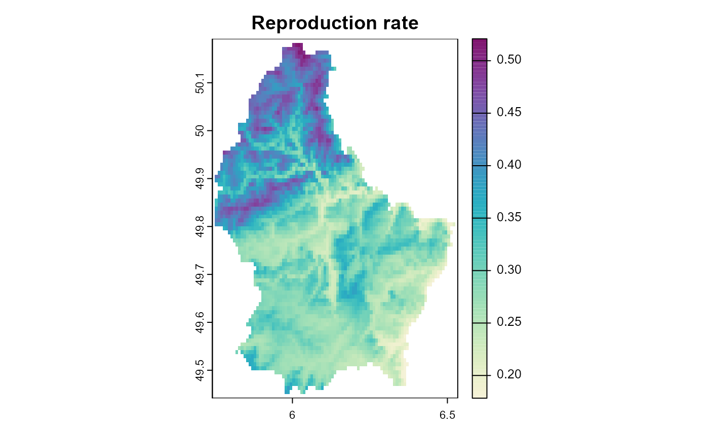
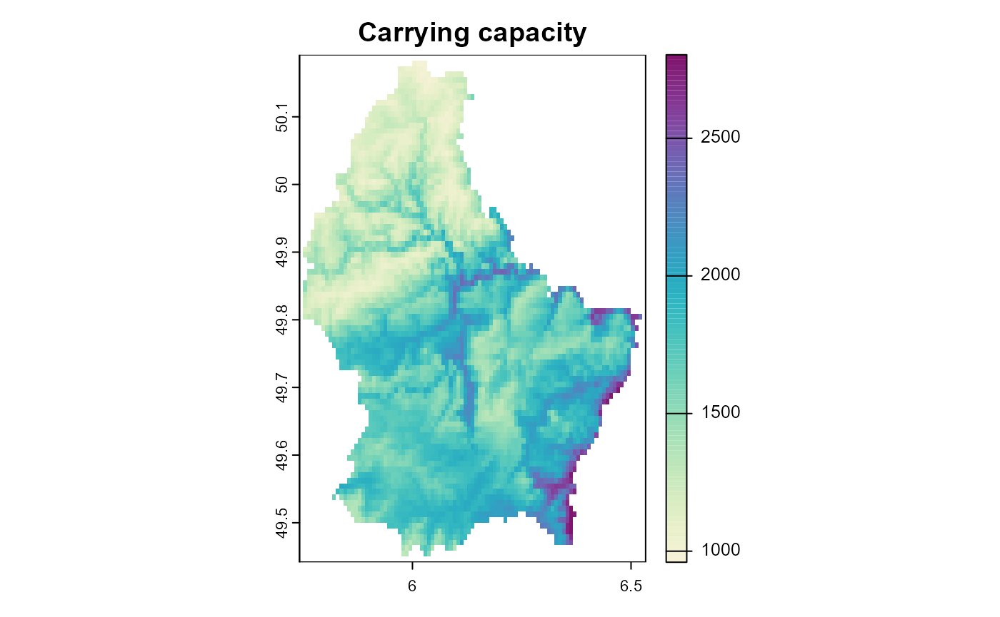

06: Metabolic scaling
Fallert, S. and Cabral, J.S.
Source:vignettes/A06_metabolic_scaling.Rmd
A06_metabolic_scaling.RmdThe temperature of the environment where a species lives (and their
bodymass) can have a large impact on their metabolism and in consequence
also on different processes such as growth, reproduction and mortality.
To include this effect, metaRange offers the option to use
metabolic scaling based on the “metabolic theory of ecology” described
by Brown et al. (2004) [Ref: 1] in the following form: \[{parameter = normalization\_constant \cdot
mass^{scaling\_exponent} \cdot e^{\frac{E}{k \cdot
temperature}}}\] This is implemented in the function
metabolic_scaling(), which can be used to calculate the
parameter value for any metabolically influenced process, based on the
mean individual body mass of a population, a process specific constant
and the temperature of the environment. It has to be noted that
different processes have different activation energy values and scaling
exponents.
| Parameter | Scaling exponent | Activation energy |
|---|---|---|
| resource usage | 3/4 | -0.65 |
| reproduction, mortality | -1/4 | -0.65 |
| carrying capacity | -3/4 | 0.65 |
Table 1: Common parameter and their associated scaling exponents and activation energies. Source: table 4 in Brown, J.H., Sibly, R.M. and Kodric-Brown, A. (2012) [Ref: 2]
Calculating the normalization constant
In the absence of experimentally measured values for the
normalization constant, metaRange offers the function
calculate_normalization_constant() to calculate the
normalization constant based on an estimated value for the parameter
under a reference temperature.
Example
library(metaRange)
#> metaRange version: 0.0.0.9000
library(terra)
#> terra 1.7.55
set_verbosity(0)
raster_file <- system.file("ex/elev.tif", package = "terra")
r <- rast(raster_file)
temperature <- scale(r, center = FALSE, scale = TRUE) * 10 + 273.15
precipitation <- r * 2
temperature <- rep(temperature, 10)
precipitation <- rep(precipitation, 10)
landscape <- sds(temperature, precipitation)
names(landscape) <- c("temperature", "precipitation")
sim <- create_simulation(landscape)
sim$add_species(name = "species_1")Define some basic traits.
sim$add_traits(
species = "species_1",
population_level = FALSE,
temperature_maximum = 300,
temperature_optimum = 288,
temperature_minimum = 280
)Add the parameter used in the metabolic scaling as global variables, since they are not species specific.
sim$add_globals(
"E_reproduction_rate" = -0.65,
"E_carrying_capacity" = 0.65,
"exponent_reproduction_rate" = -1 / 4,
"exponent_carrying_capacity" = -3 / 4,
"k" = 8.617333e-05
)Add traits that are used in the reproduction model including an estimate of the reproduction rate and the carrying capacity.
sim$add_traits(
species = "species_1",
population_level = TRUE,
"abundance" = 100,
"reproduction_rate" = 0.5,
"carrying_capacity" = 1000,
"mass" = 1
)Calculate the normalization constant, based on the parameter estimate and the optimal temperature of the species. Note that this could also be done in a loop over multiple species.
sim$add_traits(
species = "species_1",
population_level = FALSE,
"reproduction_rate_mte_constant" = calculate_normalization_constant(
parameter_value = sim$species_1$traits[["reproduction_rate"]][[1]],
scaling_exponent = sim$globals[["exponent_reproduction_rate"]],
mass = sim$species_1$traits[["mass"]][[1]],
reference_temperature = sim$species_1$traits[["temperature_optimum"]],
E = sim$globals[["E_reproduction_rate"]],
k = sim$globals[["k"]]
),
"carrying_capacity_mte_constant" = calculate_normalization_constant(
parameter_value = sim$species_1$traits[["carrying_capacity"]][[1]],
scaling_exponent = sim$globals[["exponent_carrying_capacity"]],
mass = sim$species_1$traits[["mass"]][[1]],
reference_temperature = sim$species_1$traits[["temperature_optimum"]],
E = sim$globals[["E_carrying_capacity"]],
k = sim$globals[["k"]]
)
)Add a process that does the metabolic scaling in each time step.
sim$add_process(
species = "species_1",
process_name = "mte",
process_fun = function() {
self$traits[["reproduction_rate"]] <- metabolic_scaling(
normalization_constant = self$traits[["reproduction_rate_mte_constant"]],
scaling_exponent = self$sim$globals[["exponent_reproduction_rate"]],
mass = self$traits[["mass"]],
temperature = self$sim$environment$current[["temperature"]],
E = self$sim$globals[["E_reproduction_rate"]],
k = self$sim$globals[["k"]]
)
self$traits[["carrying_capacity"]] <- metabolic_scaling(
normalization_constant = self$traits[["carrying_capacity_mte_constant"]],
scaling_exponent = self$sim$globals[["exponent_carrying_capacity"]],
mass = self$traits[["mass"]],
temperature = self$sim$environment$current[["temperature"]],
E = self$sim$globals[["E_carrying_capacity"]],
k = self$sim$globals[["k"]]
)
},
execution_priority = 2
)After this point, processes could be added that use the scaled parameters. Here we just plot the scaled parameter instead.
sim$set_time_layer_mapping(c(1, 2))
sim$begin()
plot_cols <- hcl.colors(100, "Purple-Yellow", rev = TRUE)
plot(sim, "species_1", "reproduction_rate", col = plot_cols, main = "Reproduction rate")
plot(sim, "species_1", "carrying_capacity", col = plot_cols, main = "Carrying capacity")
Note that these results show an “everything else equal” scenario, where the only variable is the temperature. In a more realistic scenario, the suitability of the habitat might also influence the reproduction rate and carrying capacity or the mean individual body mass might change with the temperature and change the results.
References
Brown, J.H., Gillooly, J.F., Allen, A.P., Savage, V.M. and West, G.B. (2004), Toward a Metabolic Theory of Ecology. Ecology, 85: 1771-1789. https://doi.org/10.1890/03-9000
Brown, J.H., Sibly, R.M. and Kodric-Brown, A. (2012). Introduction: Metabolism as the Basis for a Theoretical Unification of Ecology. In: Metabolic Ecology (eds R.M. Sibly, J.H. Brown and A. Kodric-Brown). https://doi.org/10.1002/9781119968535.ch